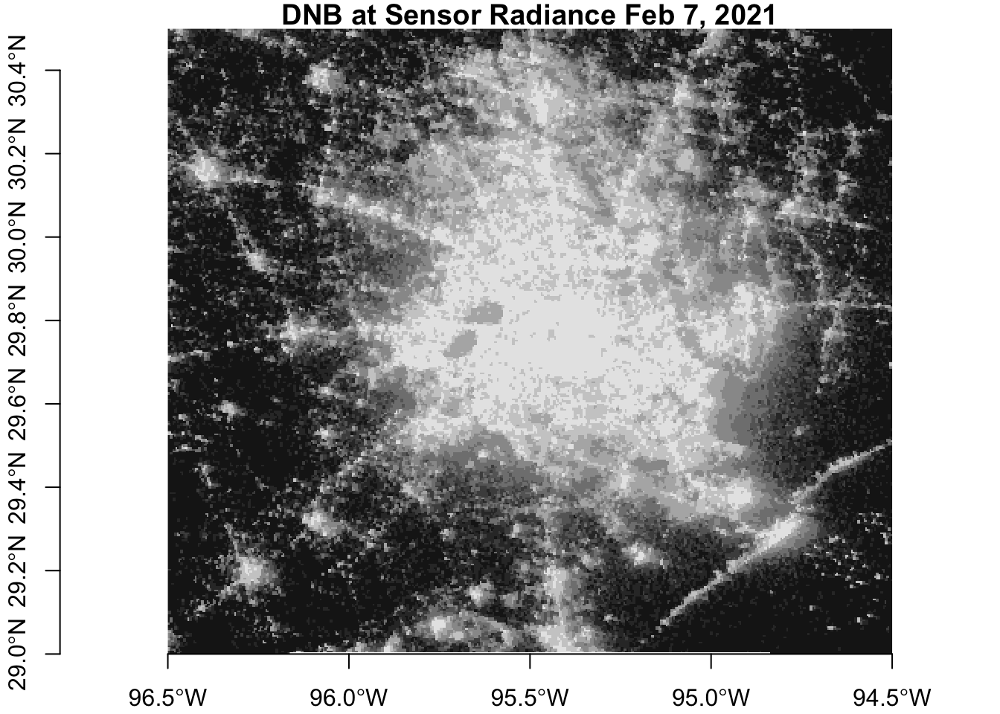
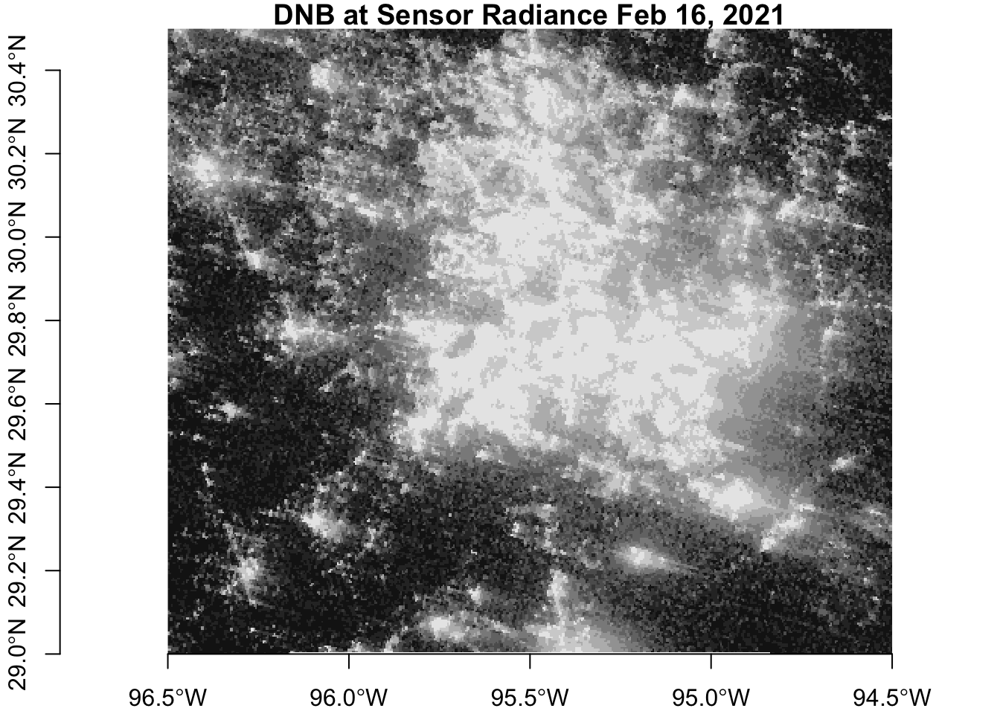

library(tidyverse)
library(here)
library(stars)
library(sf)
library(leaflet)
library(kableExtra)Blackout Analysis
This analysis evaluates the spatial distribution of power outages in Houston, Texas caused by severe winter storms in February 2021 and explores which geographic/socioeconomic variables are most correlated with power outages.
Background
xxx
Data
xxx…explain the data
DNB_At_Sensor_Radiance_500m dataset DNB = Day Night Band
explain file name storm dates why Feb 7 and Feb 16 were used…clouds
Note
add note here…xxx
Geospatial Analysis
Read in satellite imagery
The function below takes an HDFEOS file as input and, from that file, reads the DNB_at_Sensor_Radiance_500m dataset into a using the `stars’ package. The function then reads the sinusoidal tile x/y positions, adjusts the dimensions, and sets the coordinate reference system.
# function to read and process imagery files as rasters using the stars package
read_dnb_file <- function(file_name) {
# HDF dataset that contains the night lights band
dataset_name <- "//HDFEOS/GRIDS/VNP_Grid_DNB/Data_Fields/DNB_At_Sensor_Radiance_500m"
# extract the horizontal and vertical tile coordinates from the metadata
# this information is a string of text
h_string <- gdal_metadata(file_name)[199]
v_string <- gdal_metadata(file_name)[219]
# from the horizontal and vertical tile text, obtain the coordinate info as an integer
tile_h <- as.integer(str_split(h_string, "=", simplify = TRUE)[[2]])
tile_v <- as.integer(str_split(v_string, "=", simplify = TRUE)[[2]])
# use tile coordinates to calculate a geographic bounding box
west <- (10 * tile_h) - 180
north <- 90 - (10 * tile_v)
east <- west + 10
south <- north - 10
delta <- 10 / 2400
# read the dataset
dnb <- read_stars(file_name, sub = dataset_name)
# set the coordinate reference system
st_crs(dnb) <- st_crs(4326)
st_dimensions(dnb)$x$delta <- delta
st_dimensions(dnb)$x$offset <- west
st_dimensions(dnb)$y$delta <- -delta
st_dimensions(dnb)$y$offset <- north
return(dnb)
}xxx…notes on what this function is doing…
xxx…maybe instead of including the output of the above chunks, hard code them into text
xxx…write a function to read all .h5 files and run this function…might not work because this isn’t an rbind thing…maybe could specify an output object name that is based on the input file name
# load in files using the read_dnb function
feb7_h08v05_file_name <- "data/VNP46A1/VNP46A1.A2021038.h08v05.001.2021039064328.h5"
dnb_feb7_h08v05 <- read_dnb_file(file_name = feb7_h08v05_file_name)
feb7_h08v06_file_name <- "data/VNP46A1/VNP46A1.A2021038.h08v06.001.2021039064329.h5"
dnb_feb7_h08v06 <- read_dnb_file(file_name = feb7_h08v06_file_name)
feb16_h08v05_file_name <- "data/VNP46A1/VNP46A1.A2021047.h08v05.001.2021048091106.h5"
dnb_feb16_h08v05 <- read_dnb_file(file_name = feb16_h08v05_file_name)
feb16_h08v06_file_name <- "data/VNP46A1/VNP46A1.A2021047.h08v06.001.2021048091105.h5"
dnb_feb16_h08v06 <- read_dnb_file(file_name = feb16_h08v06_file_name)Combine the data using st_mosaic()
# combined imagery before the storms
dnb_feb7 <- st_mosaic(dnb_feb7_h08v05, dnb_feb7_h08v06)
# combined imagery after the storms
dnb_feb16 <- st_mosaic(dnb_feb16_h08v05, dnb_feb16_h08v06)# convert fill value of 65535 to NA
dnb_feb7[dnb_feb7 == 65535] = NA
dnb_feb16[dnb_feb16 == 65535] = NA
Note
At this point you may want to save memory by removing objects that wont be used in the rest of the analysis. Unfold the code below to see how to do this.
Code
#remove data not needed anymore
rm(dnb_feb7_h08v05, dnb_feb7_h08v06, dnb_feb16_h08v05, dnb_feb16_h08v06)
gc()The code below defines a bounding box for the region of interest.
# set region on interest
roi <- st_polygon(list(rbind(c(-96.5,29), c(-96.5,30.5), c(-94.5,30.5), c(-94.5,29), c(-96.5,29))))
# set coordinate reference system
roi_sfc <- st_sfc(roi, crs = 4326)Crop the data to the region of interest ::: {.cell}
dnb_feb7_crop <- st_crop(dnb_feb7, roi_sfc)
dnb_feb16_crop <- st_crop(dnb_feb16, roi_sfc):::
Visualize the data
Before the storms

After the storms

Create blackout mask
A xxx…[raster] representing the difference in night light intensity is created by subtracting the post-storm imagery from the pre-storm imagery Next, a blackout mask is created to identify areas where night light intensity decreased by more than 200 nW cm-2 sr-1. For this analysis, differences in night light intensity is assumed to be caused by the storms.
night_light_difference <- dnb_feb7 - dnb_feb16
blackout_mask <- night_light_difference
blackout_mask[blackout_mask <= 200] = NA
blackout_mask[blackout_mask > 200] = TRUE
# vectorize the blackout mask
blackout_mask_sf <- st_as_sf(blackout_mask)
blackout_mask_sf_valid <- st_make_valid(blackout_mask_sf)Next, the blackout mask is cropped to the region of interest and transformed to the correct projections. ::: {.cell}
blackout_mask_roi <- blackout_mask_sf_valid[roi_sfc, op = st_intersects]
# transform blackout roi to Texas centric albers equal area
blackout_mask_roi_3083 <- st_transform(blackout_mask_roi, crs = 3083):::
Road data
Roadway data was obtained from xxx. Since vehicles can be a significant source of observable nighttime light, a 200 meter highway buffer was removed from the blackout mask area to prevent areas that experienced reduced traffic from being identified as areas with power outages.
# load in roads package and select specifically highways
query <- "SELECT * FROM gis_osm_roads_free_1 WHERE fclass in ('motorway', 'motorway_link', 'primary', 'primary_link')"
highways <- st_read("data/gis_osm_roads_free_1.gpkg", query = query)
# transform to the correct projection
highways_3083 <- st_transform(highways, crs = 3083)
# create a 200 meter buffer
highways_buffer_3083 <- st_buffer(highways_3083, dist = 200)
highways_buffer_3083 <- st_union(highways_buffer_3083)# remove the highway buffer from our vectorized blackout mask using st_difference()
blackout_no_highway_3083 <- st_difference(blackout_mask_roi_3083, highways_buffer_3083)xxx…maybe include zoomed in map to show that road buffers were removed
Building data
The building data has previously been cropped to Houston metroplitan area.
#read in buildings data and select only residential
query_buildings <- "SELECT *
FROM gis_osm_buildings_a_free_1
WHERE (type IS NULL AND name IS NULL)
OR type in ('residential', 'apartments', 'house', 'static_caravan', 'detached')"
# read buildings gpkg into object
buildings <- st_read("data/gis_osm_buildings_a_free_1.gpkg", query = query_buildings)
buildings_3083 <- st_transform(buildings, crs = 3083)Census data
Socioeconomic data was obtained from the U.S. Census Bureau’s American Community Survey (ACS)
xxx…note the year of the data and update if needed
Note
The ACS data consists of the layers listed below, with each layer containing subsets of data as documented in the ACS Metadata.
|
|
# read in census data
# acs_geoms <- st_read("data/ACS_2019_5YR_TRACT_48_TEXAS.gdb",
# layer = "ACS_2019_5YR_TRACT_48_TEXAS") %>%
# select(-(STATEFP:Shape_Area))# acs_age_sex <- st_read("data/ACS_2019_5YR_TRACT_48_TEXAS.gdb",
# layer = "X01_AGE_AND_SEX")
# acs_age_sex_df <- acs_age_sex %>%
# select(GEOID) %>%
# mutate(total_pop_from_age_sex = acs_age_sex$B01001e1,
# median_age = acs_age_sex$B01002e1,
# pop_male_65_66 = acs_age_sex$B01001e20,
# pop_male_67_to_69 = acs_age_sex$B01001e21,
# pop_male_70_to_74 = acs_age_sex$B01001e22,
# pop_male_75_to_79 = acs_age_sex$B01001e23,
# pop_male_80_to_84 = acs_age_sex$B01001e24,
# pop_male_85_and_over = acs_age_sex$B01001e25,
# pop_female_65_66 = acs_age_sex$B01001e44,
# pop_female_67_to_69 = acs_age_sex$B01001e45,
# pop_female_70_to_74 = acs_age_sex$B01001e46,
# pop_female_75_to_79 = acs_age_sex$B01001e47,
# pop_female_80_to_84 = acs_age_sex$B01001e48,
# pop_female_85_and_over = acs_age_sex$B01001e49,
# pop_65_and_over = pop_male_65_66 + pop_male_67_to_69 + pop_male_70_to_74 + pop_male_75_to_79 + pop_male_80_to_84 + pop_male_85_and_over + pop_female_65_66 + pop_female_67_to_69 + pop_female_70_to_74 + pop_female_75_to_79 + pop_female_80_to_84 + pop_female_85_and_over,
# pct_65_and_over = (pop_65_and_over / total_pop_from_age_sex) * 100) %>%
# select(GEOID, total_pop_from_age_sex, pop_65_and_over, pct_65_and_over)
#
# acs_race <- st_read("data/ACS_2019_5YR_TRACT_48_TEXAS.gdb",
# layer = "X02_RACE")
# acs_race_df <- acs_race %>%
# select(GEOID) %>%
# mutate(total_pop_from_race = acs_race$B02001e1,
# pop_white = acs_race$B02001e2,
# pct_white = (pop_white / total_pop_from_race) * 100,
# pop_black = acs_race$B02001e3,
# pct_black = (pop_black / total_pop_from_race) * 100,
# pop_am_native = acs_race$B02001e4,
# pct_am_native = (pop_am_native / total_pop_from_race) * 100,
# pop_asian = acs_race$B02001e5,
# pct_asian = (pop_asian / total_pop_from_race) * 100)
# acs_hispanic_latino <- st_read("data/ACS_2019_5YR_TRACT_48_TEXAS.gdb",
# layer = "X03_HISPANIC_OR_LATINO_ORIGIN")
# acs_hispanic_latino_df <- acs_hispanic_latino %>%
# select(GEOID) %>%
# mutate(total_pop_from_hispanic = acs_hispanic_latino$B03002e1,
# pop_hispanic_latino = acs_hispanic_latino$B03002e12,
# pct_hispanic_latino = (pop_hispanic_latino / total_pop_from_hispanic) * 100)
#
# acs_children_household <- st_read("data/ACS_2019_5YR_TRACT_48_TEXAS.gdb",
# layer = "X09_CHILDREN_HOUSEHOLD_RELATIONSHIP")
# acs_children_household_df <- acs_children_household %>%
# select(GEOID) %>%
# mutate(pop_children_under_18 = acs_children_household$B09002e1)
#
# acs_poverty <- st_read("data/ACS_2019_5YR_TRACT_48_TEXAS.gdb",
# layer = "X17_POVERTY")
# acs_poverty_df <- acs_poverty %>%
# select(GEOID) %>%
# mutate(total_households = acs_poverty$B17017e1,
# num_households_below_poverty = acs_poverty$B17017e2,
# pct_households_below_poverty = (num_households_below_poverty / total_households) * 100)
#
#
# acs_income <- st_read("data/ACS_2019_5YR_TRACT_48_TEXAS.gdb",
# layer = "X19_INCOME")
#
# acs_income_df <- acs_income %>%
# select(GEOID) %>%
# mutate(median_income = acs_income$B19013e1,
# per_capita_income = acs_income$B19301e1)
#
# acs_housing_characteristics <- st_read("data/ACS_2019_5YR_TRACT_48_TEXAS.gdb",
# layer = "X25_HOUSING_CHARACTERISTICS")
# acs_housing_characteristics_df <- acs_housing_characteristics %>%
# select(GEOID) %>%
# mutate(num_housing_units = acs_housing_characteristics$B25001e1,
# median_year_house_built = acs_housing_characteristics$B25035e1,
# median_year_house_built = na_if(median_year_house_built, 0),
# num_houses_heated_by_utility_gas = acs_housing_characteristics$B25040e2,
# num_houses_heated_by_tank_lp_gas = acs_housing_characteristics$B25040e3,
# num_houses_heated_by_electricity = acs_housing_characteristics$B25040e4,
# num_houses_heated_by_fuel_oil_kerosene = acs_housing_characteristics$B25040e5,
# num_houses_heated_by_coal_coke = acs_housing_characteristics$B25040e6,
# num_houses_heated_by_wood = acs_housing_characteristics$B25040e7,
# num_houses_heated_by_solar = acs_housing_characteristics$B25040e8,
# num_houses_heated_by_other_fuel = acs_housing_characteristics$B25040e9,
# num_houses_heated_by_no_fuel = acs_housing_characteristics$B25040e10,
# num_houses_not_heated_by_electricity = (num_houses_heated_by_utility_gas + num_houses_heated_by_tank_lp_gas + num_houses_heated_by_fuel_oil_kerosene + num_houses_heated_by_coal_coke + num_houses_heated_by_wood + num_houses_heated_by_solar + num_houses_heated_by_other_fuel + num_houses_heated_by_no_fuel),
# pct_houses_not_heated_by_electricity = (num_houses_not_heated_by_electricity / num_housing_units) * 100,
# pct_houses_heated_by_electricity = (num_houses_heated_by_electricity / num_housing_units) * 100,
# num_houses_owner_occupied_no_vehicle_available = acs_housing_characteristics$B25044e3,
# num_houses_renter_occupied_no_vehicle_available = acs_housing_characteristics$B25044e10,
# num_houses_no_vehicle_available = (num_houses_owner_occupied_no_vehicle_available + num_houses_renter_occupied_no_vehicle_available),
# pct_houses_no_vehicle_available = (num_houses_no_vehicle_available / num_housing_units) * 100) %>%
# select(GEOID, num_housing_units, median_year_house_built, num_houses_heated_by_electricity, num_houses_not_heated_by_electricity, pct_houses_not_heated_by_electricity, pct_houses_heated_by_electricity, num_houses_no_vehicle_available, pct_houses_no_vehicle_available)
# xxx...if you have gas heat and lose electricitym do you still have heat?xxx…normalize these stats by the total population in the tract
Merge income data to census track data ::: {.cell}
# census_tract_data <- acs_geoms %>%
# left_join(acs_age_sex_df, by = c("GEOID_Data" = "GEOID")) %>%
# left_join(acs_race_df, by = c("GEOID_Data" = "GEOID")) %>%
# left_join(acs_hispanic_latino_df, by = c("GEOID_Data" = "GEOID")) %>%
# left_join(acs_children_household_df, by = c("GEOID_Data" = "GEOID")) %>%
# left_join(acs_poverty_df, by = c("GEOID_Data" = "GEOID")) %>%
# left_join(acs_income_df, by = c("GEOID_Data" = "GEOID")) %>%
# left_join(acs_housing_characteristics_df, by = c("GEOID_Data" = "GEOID")) %>%
# rename(total_population = total_pop_from_age_sex) %>%
# select(-c(total_pop_from_race, total_pop_from_hispanic)):::
# census_tract_data_3083 <- st_transform(census_tract_data, 3083)
#
# census_tract_data_4326 <- st_transform(census_tract_data_3083, crs = 4326)
# census_tract_data_roi_4326 <- st_crop(census_tract_data_4326, roi_sfc)
# census_tract_data_roi_3083 <- st_transform(census_tract_data_roi_4326, crs = 3083)#pal_pop <- colorNumeric("YlGn", domain = census_tract_data_4326$total_population)
# pal_pop <- colorQuantile("Blues", census_tract_data_roi_4326$total_population, n = 5)
# #pal_pop <- colorBin("Blues", bins = 5, domain = census_tract_data_roi_4326$total_population)
#
# pop_colors <- unique(pal_pop(sort(census_tract_data_roi_4326$total_population)))
# pop_labs <- quantile(census_tract_data_roi_4326$total_population, seq(0, 1, .2))
# pop_labs <- paste(lag(pop_labs), pop_labs, sep = " - ")[-1]
#
# leaflet(census_tract_data_roi_4326) %>%
# addProviderTiles(providers$OpenStreetMap) %>%
# addPolygons(fillOpacity = 0.75,
# color = ~pal_pop(total_population)) %>%
# addLegend(colors = pop_colors, labels = pop_labs,
# title = "Total Population",
# "bottomright")
# leaflet(census_tract_data_roi_4326) %>%
# addProviderTiles(providers$OpenStreetMap) %>%
# addPolygons(fillColor = ~pal_pop(total_population), fillOpacity = 0.75,
# color = "gray", weight = 0.75,
# label = ~paste("Total Population:", format(total_population, big.mark = ",")),
# highlight = highlightOptions(weight = 3, color = "red", bringToFront = TRUE)) %>%
# addLegend(pal = pal_pop, values = ~total_population,
# title = "Total Population",
# "bottomright")#pal_blackout <- colorNumeric(c("red"), 1, na.color = "transparent")
#pal_pop <- colorNumeric("Blues", domain = census_tract_data_4326$total_population)
#pal_pop <- colorQuantile("Blues", census_tract_data_roi_4326$total_population, n = 5)
# pal_pop <- colorBin("Blues", bins = 5, domain = census_tract_data_roi_4326$total_population)
# library(htmlwidgets)
# library(htmltools)
# tag.map.title <- tags$style(HTML("
# .leaflet-control.map-title {
# transform: translate(-50%,20%);
# position: fixed !important;
# left: 50%;
# text-align: center;
# padding-left: 10px;
# padding-right: 10px;
# background: rgba(255,255,255,0.75);
# color: black;
# font-weight: bold;
# font-size: 16px;
# }
# "))
#
# title <- tags$div(
# tag.map.title, HTML("Census Tract Population and Blackout Areas")
# )
#
# leaflet(census_tract_data_roi_4326) %>%
# addProviderTiles(providers$OpenStreetMap) %>%
# setView(lat = 29.75, lng = -95.5, zoom = 9) %>%
# addPolygons(fillColor = ~pal_pop(total_population), fillOpacity = 0.75,
# color = "gray", weight = 0.75,
# label = ~paste("Total Population:", format(total_population, big.mark = ",")),
# highlight = highlightOptions(weight = 3, color = "red", bringToFront = TRUE),
# group = "group_1") %>%
# addLegend(pal = pal_pop, values = ~total_population,
# title = "Total Population", position = "bottomright",
# group = "group_1") %>%
# addPolygons(data = blackout_no_highway_4326, fillColor = ~pal_blackout(DNB_At_Sensor_Radiance_500m), fillOpacity = 1, weight = 0,
# group = "group_2") %>%
# # addLegend(pal = pal_blackout, values = ~blackout_no_highway_4326$DNB_At_Sensor_Radiance_500m,
# # title = "Blackout Areas", position = "bottomleft",
# # group = "group_2") %>%
# addControl(title, position = "topleft", className="map-title")#buildings_4326 <- st_transform(buildings, crs = 4326)#use spatial subsetting to find all the residential buildings in blackout areas (like we did to crop data to our roi)
# blackout_buildings_3083 <- buildings_3083[blackout_no_highway_3083, op = st_intersects]
# blackout_buildings_4326 <- st_transform(blackout_buildings_3083, crs = 4326)
# # residential houses that did not lose power
# no_blackout_buildings_3083 <- setdiff(buildings_3083, blackout_buildings_3083)
# no_blackout_buildings_4326 <- st_transform(no_blackout_buildings_3083, crs = 4326)# blackout_buildings_census_3083 <- st_join(blackout_buildings_3083, census_tract_data_3083) %>%
# mutate(blackout_status = "lost power")
#
#
# no_blackout_buildings_census_3083 <- st_join(no_blackout_buildings_3083, census_tract_data_3083) %>%
# mutate(blackout_status = "did not lose power")# leaflet(blackout_buildings_4326) %>%
# addProviderTiles(providers$OpenStreetMap) %>%
# addPolygons(label = ~paste("Building Type:", type),
# highlight = highlightOptions(weight = 2, color = "black", bringToFront = TRUE))#numberofbuildings_without_power <- nrow(blackout_buildings_3083)#all_building_data_3083 <- rbind(blackout_buildings_census_3083, no_blackout_buildings_census_3083)# counts_of_lost_power_by_census_tract <- all_building_data_3083 %>%
# st_drop_geometry() %>%
# group_by(GEOID_Data, blackout_status) %>%
# summarise(count = n()) %>%
# pivot_wider(names_from = blackout_status, values_from = count, values_fill = 0) %>%
# rename(num_houses_did_not_lose_power = "did not lose power",
# num_houses_lost_power = "lost power") %>%
# mutate(pct_house_that_lost_power = (num_houses_lost_power / (num_houses_did_not_lose_power + num_houses_lost_power)) * 100)#head(counts_of_lost_power_by_census_tract)#census_tract_blackout_data <- left_join(census_tract_data_roi_4326, counts_of_lost_power_by_census_tract, by = "GEOID_Data")Statistical Analysis
Conclusions
Limitations
This analysis does not include any verification of power outage locations. This analysis does not incorporate typical variations in night time lights.
be clear that correlation is not causation…looking at what groups were more affected than others…what groups were disporportionatly affected
In the building data, there are a lot of NA values in the type field. When looking at the data on the map, some non-residential buildings such as schools are included.
Further work
incorporate utility infrastructure data to identify vulnerable transmission lines
xxx
go through notes here: https://jamesfrew.github.io/EDS_223_spatial_analysis/assignments/2/feedback.html#refined-query-for-highways
xxx…save leaflet maps as html widgets then use eval: false
References
https://blackmarble.gsfc.nasa.gov/tools/OpenHDF5.py
Pebesma E (2022). stars: Spatiotemporal Arrays, Raster and Vector Data Cubes. https://r-spatial.github.io/stars/, https://github.com/r-spatial/stars/.